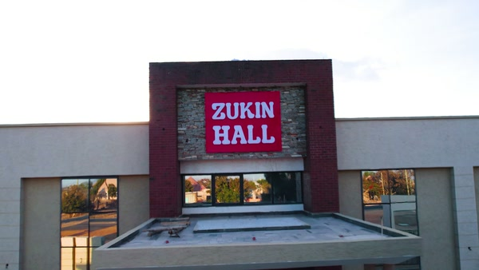
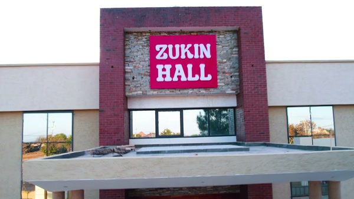

Steps 1 and 2. Nothing is rendered yet; this is the thing to approve before the frame pipeline runs.
Measured on a 10% gridline overlay. Section I wants the sign fully visible, centred horizontally, and 12–20% of frame width.


| # | Distinct view | Total | Usable | Source |
|---|---|---|---|---|
| 1 | Foyer, inside the doors | 1.00s | 0.00s | walk-in |
| 2 | Floral arch, approach and passage | 2.00s | 2.00s | walk-in |
| 3 | Aisle toward the stage | 2.00s | 2.00s | walk-in |
| 4 | Hall from the aisle, ceiling overhead | 1.64s | 1.64s | walk-in |
| 5 | Hall wide, tables laid | 3.48s | 2.44s | seg 12, 13 |
| 6 | Table setting close | 2.60s | 1.64s | seg 14, 15 |
| 7 | Ceiling, chandelier and blossoms | 3.56s | 3.56s | seg 18 |
| 8 | Stage, gold sofa and floral walls | 9.28s | 9.28s | seg 16, 17, 19, 20 |
| 9 | Aisle with arch, walkway | 1.64s | 1.64s | seg 21 |
| Where | Shot | Source | Range | Scroll | Progress | Note |
|---|---|---|---|---|---|---|
| EXTERIOR-IN | front_view | runway C | 1.60-2.20s | 5% | 0.000–0.050 | frame 1 = the held front view; matches the intro's last frame exactly |
| EXTERIOR-IN | facade_doors | runway C | 2.20-3.40s | 6% | 0.050–0.110 | push in to the canopy and the wooden doors |
| THRESHOLD | crossing | clip 20.20-20.60 | 20.20-20.60s | 3% | 0.110–0.140 | the single doorway crossing, uncut |
| INTERIOR | arch | clip | 20.60-23.60s | 11% | 0.140–0.250 | foyer and the floral arch |
| INTERIOR | aisle_hall | clip | 23.60-27.24s | 11% | 0.250–0.360 | down the aisle into the hall |
| INTERIOR | hall_wide | clip | 27.24-29.68s | 8% | 0.360–0.440 | the hall, tables laid |
| INTERIOR | tables | clip | 30.72-32.36s | 7% | 0.440–0.510 | charger plate, napkin, glassware |
| INTERIOR | ceiling | clip | 37.36-40.92s | 9% | 0.510–0.600 | chandelier and hanging blossoms |
| INTERIOR | stage | clip | 40.92-43.84s | 8% | 0.600–0.680 | stage, gold sofa, floral walls |
| INTERIOR | aisle_decor | clip | 46.16-47.80s | 6% | 0.680–0.740 | aisle arch and walkway |
| THRESHOLD-OUT | exit_reverse | reuses arch+aisle_hall frames | reversed | 11% | 0.740–0.850 | walk-in played in REVERSE index; no new frames, no cut |
| EXTERIOR-OUT | parking | runway container (cleaned) | 0.00-4.04s | 10% | 0.850–0.950 | courtyard, paved yard, outbuildings, access road |
| FINALE | entrance | runway C | 1.60-2.20s | 5% | 0.950–1.000 | returns to the scroll-start framing, booking prompt over it |
Every line is a placeholder for client review. ⚠ marks a claim that must be confirmed before launch. Copy lives in i18n keys, EN and SW.
| # | Eyebrow | Title | Line | Shot | Status |
|---|---|---|---|---|---|
| 01 | ARRIVAL | A grand welcome | A bright foyer and a floral arch that set the tone before guests step in. | arch | seen |
| 02 | THE HALL | Room to celebrate | A spacious, open hall with polished floors and a clear central aisle. | aisle_hall | seen |
| 03 | FURNITURE | Dressed for every table | Round tables, white and gold chairs, and linens in your colours. | hall_wide | seen |
| 04 | DETAIL | Details guests notice | Gold charger plates, crystal glassware and fresh floral centrepieces. | tables | seen |
| 05 | LIGHTING | A ceiling worth looking up at | Crystal chandeliers, glowing pendants and soft draped fabric overhead. | ceiling | seen |
| 06 | THE STAGE | Where the moment happens | A styled stage with a gold sofa and chairs, floral walls and lanterns. | stage | seen |
| 07 | DECORATION | Styled to your story | Zukin decoration turns the hall into your theme, from the aisle to the ceiling. | aisle_decor | ⚠ confirm packages |
| 08 | PARKING AND ACCESS | Room to arrive | Space to park and a clear approach to the entrance. | parking | ⚠ confirm space count |
| 09 | BOOK | Reserve your date | Check availability and send your request. | entrance | seen |
Deferred: K.08 SOUND AND SERVICE — needs client confirmation of sound system, air conditioning and on-site team; the footage shows speakers and a wall AC unit only incidentally.
The clip does not contain these. Per G.3 they are listed rather than padded with repeats or invented.